検査パネル
LAB_PANEL · 検査項目 × 入力カラムの2軸の表
検査パネルとは
- 1.1フィールドの追加と属性パネルの構成
1.1フィールドの追加と属性パネルの構成
概要
検査パネル(LAB_PANEL) は、検査項目 × 入力カラムの2軸で構成された表です。行は検査項目(血糖 · 白血球 …)、列は項目ごとに同じように受け付ける値(検査値 · 判定 · 臨床的意義)です。表(テーブル型)·フィールドグループと最も異なる点は、追加してすぐに使える構成が入っていることです — 他のコンテナは空の案内だけが表示されますが、検査パネルは血糖の1項目と3つの列があらかじめ入った状態で作成されます。
画面説明
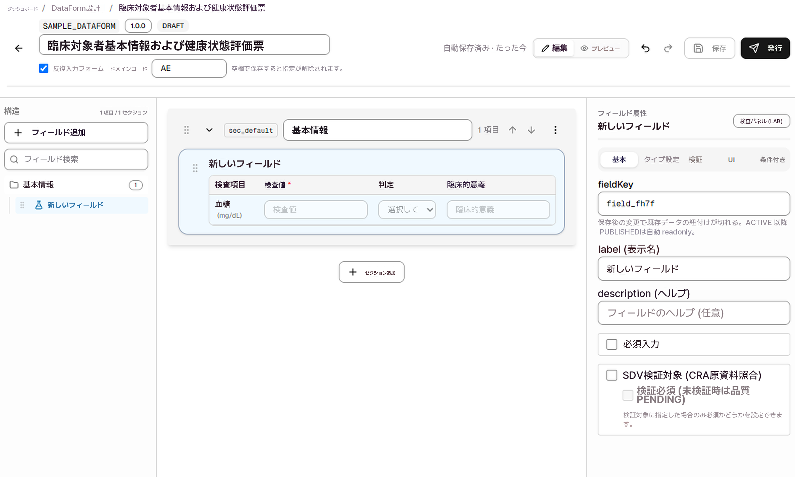
[+ フィールド追加] — ここでタイプを指定するとフィールドが作成されます。
構造ツリーに新しいフィールドが追加されます。アイコンは試験管の形です。
WYSIWYG キャンバスに表がすでに描かれています — 行は血糖 (mg/dL) の1つ、列は検査項目 · 検査値* · 判定 · 臨床的意義です。この構成をそのまま使うか、タイプ設定タブで修正します。3章
fieldKey — 表全体が保存されるキーです。検査項目や列ごとに別々には作られません。2.1
label (表示名) · description (ヘルプ) — 表の上下に表示される名前と補足説明です。2.1
必須入力 — 2.2 で扱います。
SDV検証対象 — 2.3 で扱います。
タイプバッジ「検査パネル (LAB)」 — 選択したフィールドのタイプです。追加した後は変更できません。
属性タブ 5種 — 基本 · タイプ設定 · 検証 · UI · 条件付き。このマニュアルの2~6章が各タブに対応します。
SDV の下が空いています。他のタイプにあるAE意味ロールと未測定宣言を許可は、検査パネルでは項目そのものが表示されません — 値が複数行のため、その2つの機能が成り立たないからです。7.2
注意事項
必須確認 データ破損 · フォーム完了不可
- • 基本構成は例であり、標準ではありません。「血糖」の1項目は形を見せるための seed です — 必ず実際に受け付ける検査項目に置き換えてください。3.3 · 3.4
- • ⛔ 記録者は行を追加できません。表(テーブル型)と異なり、行は作成者が決めた検査項目に固定されます — 受け付ける項目を漏れなく入れる必要があります。3.4 · 7.1
- • タイプは追加した後に変更できず、発行(PUBLISH)後は構造そのものを変更できません。誤って選択した場合は、フィールドを削除して再度追加してください。
誤解しやすい動作
- • 正常範囲はこの画面では記入しません。機関 · 性別 · 年齢ごとに異なるため、左メニューの「LAB正常範囲」画面で別途作成します。3.2 · 3.7
基本タブ — 名前 · 必須 · 検証対象
- 2.1fieldKey · 表示名 · ヘルプ
- 2.2必須入力
- 2.3SDV検証対象 (CRA原資料照合)
2.1fieldKey · 表示名 · ヘルプ
概要
表の名前を決める領域です。保存キー(fieldKey)と画面に表示される名前(label)は互いに異なる値であり、変更してよいタイミングが異なります。検査パネルはいつ採血したどの検査かが分かる必要があるため、表示名を具体的に記入してください。
画面説明
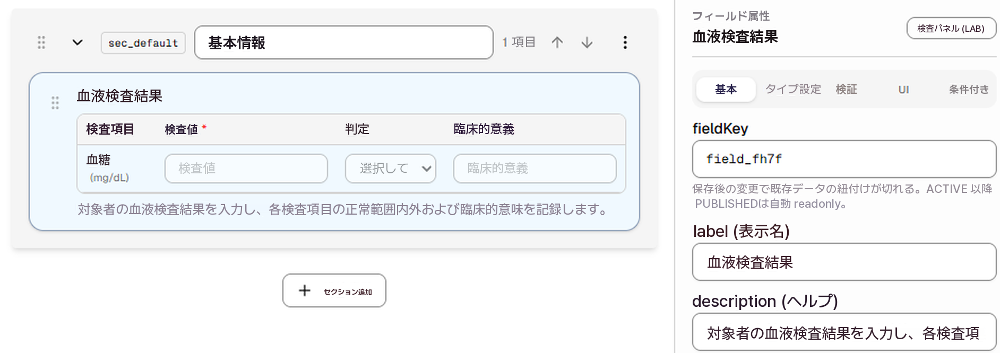
label (表示名) — 表の上に表示するタイトルを入力します。キャプチャでは 血液検査結果 です。
キャンバスの表のタイトルとして表示されます。検査項目名や列名とは別の層です — その2つはタイプ設定タブで別途決めます。3.2 · 3.5
description (ヘルプ) — 表の下に表示する補足説明を入力します。空欄にすると表示されません。
表の下にグレーの文字で表示されます。キャプチャでは「対象者の血液検査結果を入力し、各検査項目の正常範囲内外および臨床的意味を記録します。」です。
fieldKey — 表全体が保存されるキーです。フィールドを追加すると field_fh7f のように自動で付与され、画面の案内のとおり「保存後の変更で既存データの紐付けが切れる」です。
注意事項
必須確認 データ破損 · フォーム完了不可
- • 検査時点を表示名に明記してください。「血液検査結果」だけでは、スクリーニング検査なのかフォローアップ検査なのか分かりません — 同じフォームを複数の来院で使う場合に特に重要です。
- • 採血日をどこに記入するかをヘルプで案内してください。検査日はこの表の中ではなくフォームの日付フィールドに記入するのが原則であり、自動判定を使うには必ずそうする必要があります。3.7
- • fieldKey は保存した後に変更しないでください。すでに入力されたデータとの紐付けが切れ、このフィールドを参照していた検証規則4.3 · 条件付き表示6章 · 自動判定の指定3.7 も一緒に壊れます。
誤解しやすい動作
- • 表示名(label)はいつでも変更できます。保存された値には影響しません。
2.2必須入力
概要
この表を必ず入力しないとフォームを完了できないようにするかを決めます。検査パネルには他のコンテナにない配慮が1つあります — まったく手を付けていない行は未完了とみなしません。そのため、一部の検査だけを実施した状況をそのまま記録できます。
画面説明
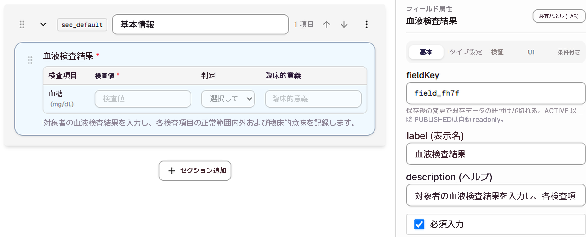
* が表示される必須入力 — 選択すると、この表が必須項目になります。実際に入力した行が1件もなければフォームを完了できません。
キャンバスの表のタイトルの右に赤い * が表示されます。列ごとに付く星印は 3.5 で別途決めます。
label · description — 2.1 で入力した値がそのまま表示されます。
注意事項
必須確認 データ破損 · フォーム完了不可
- • ⛔ 1つの欄でも触れた行はすべてチェックします。検査値だけを記入して必須列を空にすると、その行は未完了のまま残ります — 使わない行は何も入力しない状態のままにしてください。3.5
- • ⛔ 「検査しない」を示す手段がありません。未測定宣言を有効にできないタイプなので、実施の有無を残す必要がある場合は、前に はい/いいえ の質問を置いて条件付きでまとめるか、表示専用列でメモを残してください。3.5 · 6章 · 7.2
誤解しやすい動作
- • すべてのカラムが空の行はチェックしません。7項目のうち3つだけを実施した場合、残りの4行は空のままでもフォームが完了します — 検査パネルは行があらかじめ並んでいるため、このような配慮が必要です。3.6
- • 非表示のフィールドは必須チェックから除外されます。条件付き表示6章で隠されている間は、必須であっても空のままフォームが完了します。
2.3SDV検証対象 (CRA原資料照合)
概要
SDV(Source Data Verification) は、臨床開発モニター(CRA)が入力値を医療機関の原資料と照合する手順です。検査パネルは原資料が明確な資料(検査室の結果報告書)なので、SDV の効用が最も大きいタイプです。この設定はすべてのフィールドタイプで同じなので、画面もタイプに関係なく同じです。
画面説明


SDV検証対象 (CRA原資料照合) — 選択すると、このフィールドが CRA の照合リストに含まれます。指定の単位は表全体であり、検査項目や列ごとに別々に指定することはできません。
選択状態に変わると、下位項目が有効になります。
検証必須 (未検証時は品質 PENDING) — ①を選択した後でなければ指定できません。選択すると、CRA が照合を終えるまで、そのデータの品質ステータスが PENDING のままになります。
①を選択する前は、②が薄く表示されて無効です。画面の案内のとおり「検証対象に指定した場合のみ必須かどうかを設定できます。」
注意事項
必須確認 データ破損 · フォーム完了不可
- • ⛔ 自動判定が付いた値も照合対象です。システムが記入した判定はその時点の正常範囲で計算した結果にすぎず、検査室の結果報告書の判定と異なる場合があります — CRA が原資料と突き合わせる必要があります。3.7
- • ⛔ 単位が合っているかも照合する必要があります。システムは単位をチェックしません — 検査室が
mg/dLで報告する値をmmol/Lの欄に記入しても、そのまま保存されます。3.3
誤解しやすい動作
- • 値が変更されると検証が解除されます。一つの行のセル一つだけを直しても、表全体の品質ステータスが PENDING に戻り、CRA が再度照合する必要があります。
参考
- • 品質ステータスは PENDING → VERIFIED → CLEAN の順に進みます。検証必須に指定したフィールドが一つでも未検証であれば、そのデータは CLEAN になりません。
タイプ設定タブ — 2軸構成と自動判定
- 3.1タイプ設定タブの全体構成
- 3.2検査項目 — カード構造
- 3.3検査項目の追加
- 3.4検査項目の作成完了
- 3.5入力カラム
- 3.6標準パネルの読み込み
- 3.7正常範囲自動判定 — 3つのスロットの指定
- 3.8正常範囲自動判定 — 判定値マッピングと保存
3.1全体構成
概要
検査パネルで最も大きなタブです。2つの軸を入れ子タブに分けて作成します — 検査項目(表の行)と入力カラム(表の列)です。その上に標準パネル読み込み、下に正常範囲自動判定の指定が付き、1つのタブに4つのまとまりが入っています。
画面説明
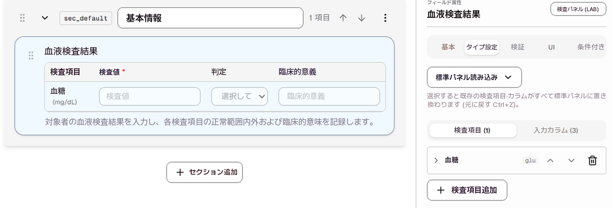
標準パネル読み込み — よく使う検査セットを一度に取り込みます。3.6
入れ子タブ 2種 — 検査項目 (N) と入力カラム (N)。括弧内の数字が現在の件数です。キー形式エラーがあるとタブ名の横に⚠ 件数バッジが付き、隠れているタブのエラーも分かります。
検査項目カード — 折りたたんだ状態では、表示名と itemCode バッジだけが表示されます。∧ ∨ で順序を、🗑 で削除を行います。3.2
[+ 検査項目追加] — 検査項目を増やします。3.3
プリセットの案内 — 「選択すると既存の検査項目·カラムがすべて標準パネルに置き換わります (元に戻す Ctrl+Z)。」 ⚠ 追加ではなく置き換えです。3.6
キャンバスには基本構成(血糖 1行 × 3列)がすでに描かれています。設定を変えるとすぐに反映されます。1.1
タイプバッジ「検査パネル (LAB)」 — 設定中のフィールドのタイプです。
注意事項
必須確認 データ破損 · フォーム完了不可
- • ⛔ キーエラーを残したまま保存しないでください。itemCode · fieldKey は小文字で始まる snake_case であり、重複できません。タブバッジの ⚠ が消えなければ保存が拒否されます。3.3 · 3.5
誤解しやすい動作
- • このタブの下に「正常範囲自動判定の指定」ブロックが続きます。キャプチャは上部だけを示しており、そのブロックは 3.7 · 3.8 で別途扱います。
- • デフォルト値(defaultValue)の項目がありません。表は値が複数行のため、あらかじめ入力しておく手段が提供されていません。7.2
- • 自動計算(calculation)の項目もありません。表全体を1つの数値として算出することは成り立ちません — 検査値で計算が必要な場合は、別の数値フィールドを置いてください。7.2
3.2検査項目 — カード構造
概要
検査項目1つが表の行1つです。カードを展開すると3つの欄が表示されます — itemCode(保存用コード) · itemLabel(画面表示名) · unit(単位)です。⚠ 正常範囲を記入する欄はありません — 機関ごとに異なる値なので、別の画面で別途作成するためです。
画面説明
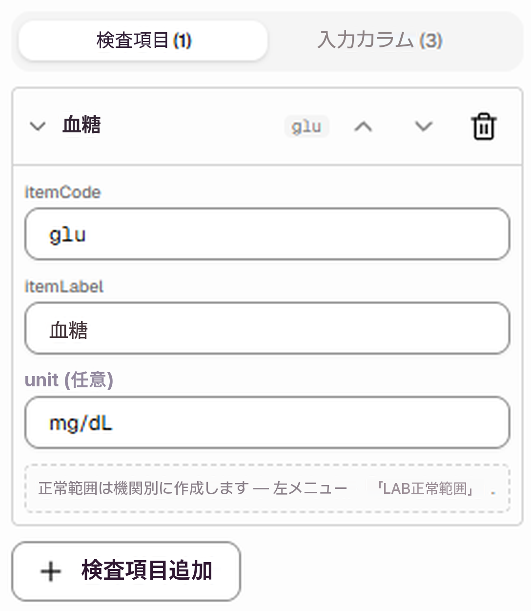
折りたたみ · 展開 — カードを折りたたむと表示名と itemCode バッジだけが残り、項目が多くてもひと目で確認できます。
itemCode — 保存と抽出に使われるコードです。キャプチャでは glu です。小文字で始まる snake_case でなければならず、1つの表の中で重複できません。
itemLabel — 表の行見出しに表示する名前です。キャプチャでは 血糖 です。
unit (任意) — 単位です。キャプチャでは mg/dL で、行見出しに表示名の下の小さな文字で一緒に表示されます。⚠ この欄は数値列があるときだけ表示されます。3.5
[+ 検査項目追加] — 項目を増やします。3.3
入れ子タブ — 現在は検査項目タブです。列を修正するには入力カラムタブに移ってください。3.5
案内 — 「正常範囲は機関別に作成します — 左メニュー「LAB正常範囲」」。正常範囲はここではなく、その画面で機関 × 性別 × 年齢の単位で作成します。
注意事項
必須確認 データ破損 · フォーム完了不可
- • ⛔ 正常範囲を表示名や単位の欄に記入しないでください。
血糖 (70-110)のように記入すると画面には表示されますが、自動判定はそれを読み取りません — ただの長い名前にすぎません。3.7 - • ⛔ 単位を必ず記入してください。システムは単位をチェックしないため、記入しておかないと、記録者が別の単位の値をそのまま入力しても除外されません。2.3
- • itemCode は発行前に確定してください。保存した後に変えると、その行の値だけ紐付けが切れます — 表は残り1行だけが空になる形なので、気付きにくくなります。2.1
誤解しやすい動作
- • itemCode は抽出データの列名になります。標準コード(例: CDISC LB の
GLUC系)に従うとデータを統合するときに楽です — ただし、小文字 snake_case の規則は守る必要があります。
3.3検査項目の追加
概要
項目を追加すると、新しいカードが自動で展開された状態で作成されます。3つの欄はすべて空で、欄の中に見える glu · 血糖 · mg/dL は入力例(薄い文字)にすぎず、保存された値ではありません。⚠ 最初の項目の値と文字が同じなので、すでに入力済みと誤解しやすいため注意してください。
画面説明
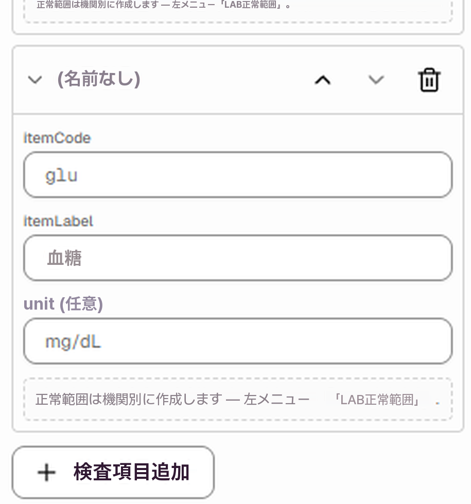
[+ 検査項目追加] — 押すたびに空のカードが1つずつ増えます。
新しいカードが「(名前なし)」で作成され、自動で展開されます。表示名を入力すると、その位置に名前が入ります。
itemCode — 空です。薄い glu は入力例です。
itemLabel — 空です。薄い 血糖 は入力例です。
unit (任意) — 空です。薄い mg/dL は入力例です。
正常範囲の案内は新しいカードにも同じように表示されます — 項目ごとに「LAB正常範囲」画面で別途作成するという意味です。3.2
注意事項
必須確認 データ破損 · フォーム完了不可
- • ⛔ 空のカードを残さないでください。itemCode と itemLabel は必ず入力する必要があり、空のまま保存すると拒否されます。使わないカードは 🗑 で削除してください。3.2
- • ⛔ 薄い文字を値と取り違えないでください。入力例は保存されません — そのままにすると名前のない行ができます。
誤解しやすい動作
- • itemCode が重複すると、その場ですぐに警告が表示されます。「重複したキー」または「snake_case (小文字始まり) が必要」が欄の下に表示されるため、保存前に修正できます。3.1
- • 項目の順序がそのまま表の行の順序です。検査室の結果報告書と同じ順序にしておくと、記録者が転記しやすくなります — 後から ∧ ∨ で変更できます。3.2
3.4検査項目の作成完了
概要
3つの欄を入力すると、キャンバスに行がすぐに追加されます。キャプチャは「白血球」を2番目の項目として入れた状態です — 行見出しに表示名と単位が一緒に表示され、列構成(検査値 · 判定 · 臨床的意義)はすべての行に同じように適用されます。
画面説明
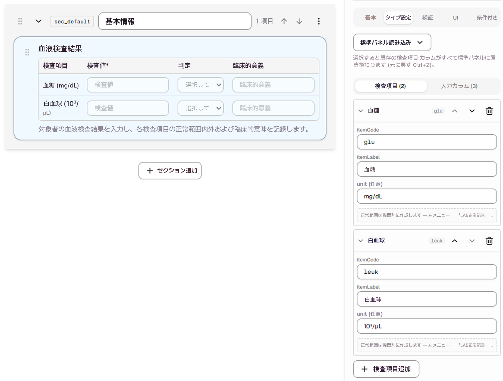
itemCode — leuk を入力しました。
itemLabel — 白血球 を入力しました。
キャンバスに「白血球」の行が追加されます。
unit — 10³/µL を入力しました。
行見出しの表示名の下に小さな文字で単位が付きます。
[+ 検査項目追加] — さらに必要な場合は同じ手順を繰り返します。3.3
検査項目 (2) — タブ名の数字が1から2に変わりました。
最初の項目(血糖)のカードはそのまま残っています。項目を追加しても既存の項目は変わりません — まるごと置き換わるのは、標準パネルを読み込むときだけです。3.6
注意事項
必須確認 データ破損 · フォーム完了不可
- • ⛔ 受け付ける検査項目を漏れなく入れてください。記録者は行を追加できません — ここにない項目は記録する方法がありません。1.1
- • ⛔ 実施しない項目は入れないでください。行があらかじめ並ぶため、使わない項目が多いと、記録者は何を入力すべきか分かりにくくなります。2.2
誤解しやすい動作
- • 項目が多くなったらカードを折りたたんでおいてください。折りたたんだ状態では表示名とコードだけが表示され、全体の構成を確認しやすくなります。3.2
- • 単位は項目ごとに異なります。キャプチャのように、血糖は
mg/dL、白血球は10³/µLです — 1つの表の中で統一しようとしないでください。
3.5入力カラム
概要
入力カラムは表の列であり、すべての検査項目に同じように適用されます。基本構成は3列です — 検査値 · 判定 · 臨床的意義。列の1つ1つが小さなフィールドなので、入力方式 · 保存キー · 名前 · 必須かどうかを別々に決めます。検査項目と異なり、列は通常そのままにして使います。
画面説明
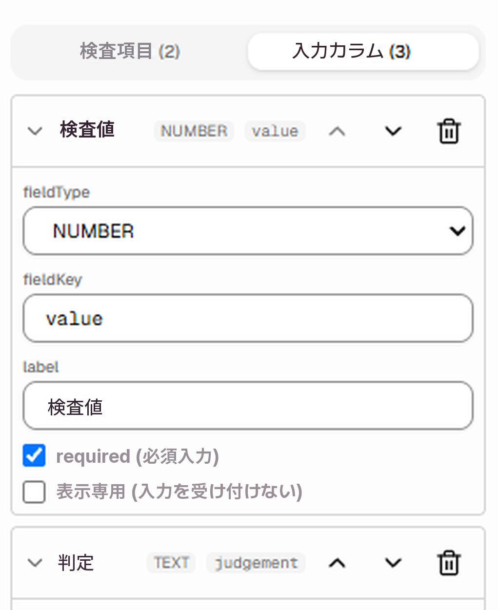
fieldType — その列の入力方式です。5種から選びます — TEXT · NUMBER · SELECT · DATE · BOOLEAN。検査値は数値比較と自動判定のため、必ず NUMBER である必要があります。3.7
fieldKey — その列の保存キーです。キャプチャでは value で、小文字 snake_case の規則と重複禁止が同じように適用されます。3.2
label — 表の見出しです。入力画面ではセル内の案内文としても同じ値が使われます。5.4
required (必須入力) — その列を必ず入力する必要があるかを決めます。キャプチャでは検査値だけが必須です。
表示専用 (入力を受け付けない) — 値を受け付けず、検査項目ごとに決めておいた固定の文言を表示する列です(検体の種類 · 検査方法など)。⚠ 必須と一緒に指定することはできず、自動判定の測定値列·判定列としても使えません。3.7
下に判定 · 臨床的意義のカードと[+ カラム追加] が続きます。⚠ キャプチャの判定列は TEXT に変更されています — 基本構成は選択 (SELECT) で、正常 · 異常の2つの選択肢を持っています。
注意事項
必須確認 データ破損 · フォーム完了不可
- • ⛔ 検査値の列を TEXT にしないでください。数値でなければ自動判定も数値比較もできず、
5.2以下のような値がそのまま入ってきます。3.7 - • ⛔ 列をむやみに増やさないでください。列はすべての検査項目に同じように付きます — 1つの項目にだけ必要な欄を追加すると、残りの行に空の欄がずらりとできます。5.2
誤解しやすい動作
- • 判定列を選択式にするには、選択肢を補う必要があります。自動判定も一緒に使うには、選択肢に 正常 · 低 · 高 の3つをすべて含める必要があります — 基本構成の 正常 · 異常 の2つでは自動判定を有効にできません。3.8
- • 表示専用列は、メモを固定で並べるときに使います。検体の種類のように項目ごとに決まっていて、記録者が変える必要のない内容に適しています — 値を受け付けないため、検証対象からも外れます。2.2
3.6標準パネルの読み込み
概要
よく使う検査セットを一度に取り込む機能です。キャプチャは基本代謝検査セットを読み込み、ナトリウム · カリウム · クロール · 尿素窒素 · クレアチニン · 血糖 · カルシウムの7項目が一度に入った状態です。⚠ 既存の構成に追加されるのではなく、まるごと置き換わるため、作成を始めるときに最初に使用してください。
画面説明
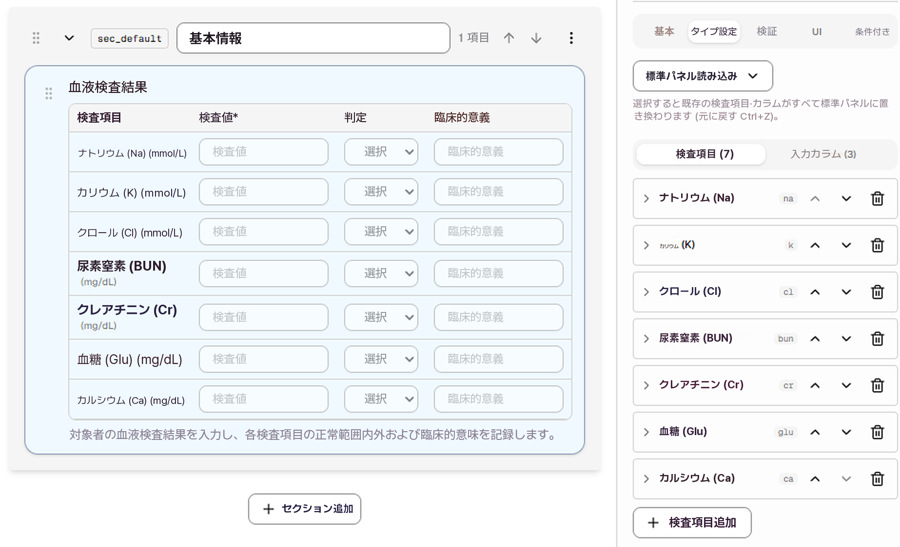
標準パネル読み込み — 一覧からセットを選ぶとすぐに適用されます。
検査項目カードが7つに置き換わります。各項目にはコード · 表示名 · 単位があらかじめ入力されています。
キャンバスにも7行が一度に描かれます。列構成はそのままです。
検査項目 (7) — 件数が変わりました。入力カラム (3) はそのままです。
案内 — 「選択すると既存の検査項目·カラムがすべて標準パネルに置き換わります (元に戻す Ctrl+Z)。」 ⚠ カラムも置き換えの対象であることを明記しています。
注意事項
必須確認 データ破損 · フォーム完了不可
- • ⛔ 手間をかけて作成した後に読み込まないでください。検査項目だけでなく入力カラムまでまるごと置き換わります — 自分で作った列構成も一緒に消えます。3.5
- • 誤って読み込んだ場合は、すぐに Ctrl+Z を押してください。画面の案内にあるとおり元に戻せますが、他の作業をした後では元に戻す操作がその作業まで一緒に取り消すため、すぐに対処するほうが安全です。
誤解しやすい動作
- • 読み込んだ後、課題に合わせて手直ししてください。標準セットは出発点にすぎず、実施しない項目は 🗑 で削除するほうが記録者にとって明確です。3.4
- • 単位とコードが課題の基準と同じか確認してください。検査室が別の単位で報告する場合は、単位の欄を修正する必要があります — システムは単位をチェックしません。2.3 · 3.2
3.7正常範囲自動判定 — 3つのスロットの指定
概要
検査値を正常範囲と照らし合わせて判定を自動で記入する機能です。検査パネルにだけある設定で、使うには3つを指定する必要があります — どの列の値を見て、どの列に判定を書き、どの時点を基準とした年齢で範囲を選ぶかです。正常範囲そのものはここではなく、「LAB正常範囲」画面にあります。
画面説明
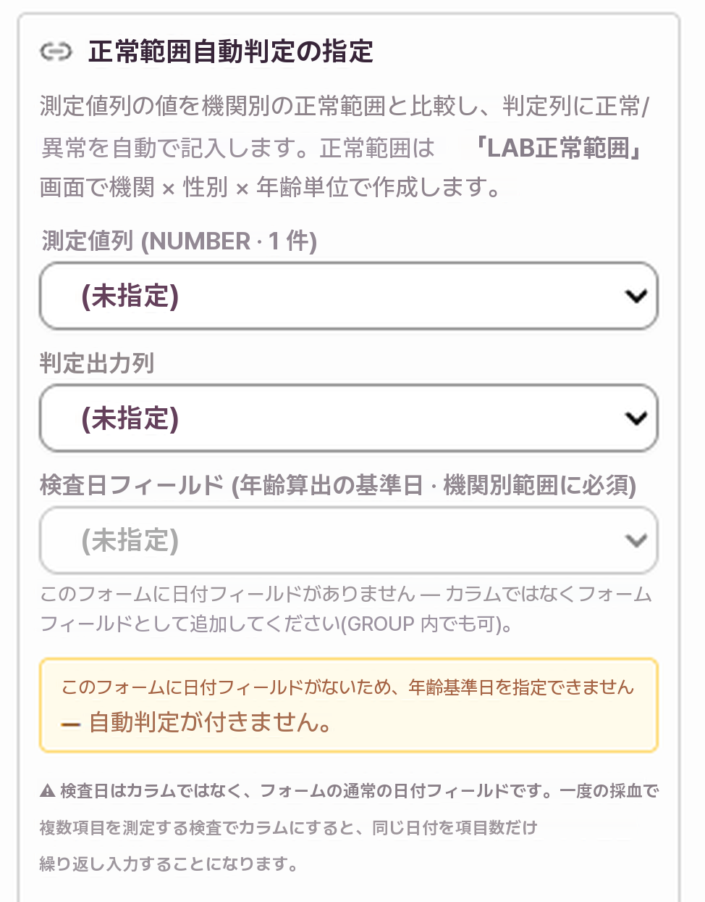
測定値列 (NUMBER · 1 件) — 判定の根拠となる列です。数値列だけを選ぶことができ、表示専用列は除外されます。3.5
判定出力列 — 判定結果が記入される列です。テキスト列または選択列を選べます。
検査日フィールド — 年齢を計算する基準の日付です。⚠ 表の列ではなく、フォームにある日付フィールドを選びます。キャプチャではそのようなフィールドがないため無効です。
ブロックのタイトル「正常範囲自動判定の指定」 — 🔗 アイコンが付いています。
案内 — 「測定値列の値を機関別の正常範囲と比較し、判定列に正常/異常を自動で記入します。正常範囲は「LAB正常範囲」画面で機関 × 性別 × 年齢単位で作成します。」
⚠ 警告 — 「このフォームに日付フィールドがないため、年齢基準日を指定できません — 自動判定が付きません。」 この状態では判定が1つも付きません。
⚠ 案内 — 「検査日はカラムではなく、フォームの通常の日付フィールドです。一度の採血で複数項目を測定する検査でカラムにすると、同じ日付を項目数だけ繰り返し入力することになります。」
注意事項
必須確認 データ破損 · フォーム完了不可
- • ⛔ 検査日フィールドがないと、自動判定はまったく動作しません。正常範囲が年齢層別に作成されているため、年齢が分からなければ範囲を選べないからです — 自動判定を使うには、先にフォームに日付フィールドを追加してください。
- • ⛔ 検査日を表の列にしないでください。一度の採血で7項目を測定すると、同じ日付を7回入力することになります — そのため、列は候補から最初から外れています。日付フィールドはフィールドグループの中に置いても選べます。3.6
誤解しやすい動作
- • 正常範囲はこの画面にはありません。機関 · 性別 · 年齢の単位で「LAB正常範囲」画面で作成し、ここではどの列を使うかだけを指定します。3.2
- • 自動判定は任意の機能です。使わない場合は3つのスロットを (未指定) のままにすればよく、判定は記録者が直接記入します。3.5
3.8正常範囲自動判定 — 判定値マッピングと保存
概要
スロットを選ぶと、その下に判定値マッピングと[指定を保存] が続きます。マッピングは、システムが使う判定トークン(NORMAL · LOW · HIGH)をこのフォームが使う値に置き換える設定です。⚠ ただし、キャプチャは判定出力列を誤って選んだ状態です — 下の説明と注意事項を読んでください。
画面説明
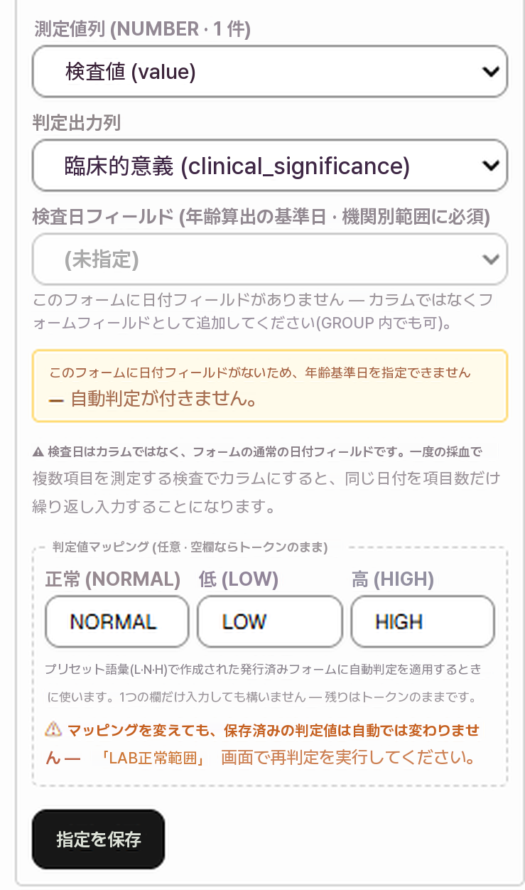
測定値列 = 検査値 (value) — 正しい指定です。数値列である必要があります。3.5
判定出力列 = 臨床的意義 (clinical_significance) — ⚠ ここが誤っている部分です。臨床的意義は記録者が自由に記述する欄ですが、自動判定がその記述を上書きします。正しい対象は「判定」列です。
判定値マッピング (任意) — 3つの欄です。正常(NORMAL) · 低(LOW) · 高(HIGH)。空欄にするとシステムのトークンがそのまま保存され、記入するとその値に置き換えて保存されます (例: 判定列の選択肢が N·L·H であれば、そのように記入します)。
[指定を保存] — ⚠ フォームの保存とは別です。このボタンを押さないと、自動判定の指定は保存されません。
案内 — 「プリセット語彙(L·N·H)で作成された発行済みフォームに自動判定を適用するときに使います。1つの欄だけ入力しても構いません — 残りはトークンのままです。」
⚠ 警告 — 「マッピングを変えても、保存済みの判定値は自動では変わりません — 「LAB正常範囲」画面で再判定を実行してください。」
注意事項
必須確認 データ破損 · フォーム完了不可
- • ⛔ 判定出力列に自由記述欄を選ばないでください。システムはテキスト列であれば受け入れるため阻止しませんが、自動判定が記入された瞬間に記録者が書いた所見が消えます。「判定」列を選んでください。
- • 判定列を選択式にした場合は、選択肢に3つをすべて含める必要があります。正常 · 低 · 高 のうち1つでも欠けると、指定が拒否されます — 基本構成の 正常 · 異常 の2つでは有効にできません。3.5
- • ⛔ [指定を保存] を押さないと適用されません。フォームを保存しても、この指定は別途保存されません — 画面を離れる前に必ず押してください。
誤解しやすい動作
- • マッピングを変えても、過去の値はそのままです。保存済みの判定を合わせるには、「LAB正常範囲」画面で再判定を実行する必要があります。
検証タブ — 保存前の値チェック
- 4.1検証規則がない状態
- 4.2規則の追加
- 4.3規則作成完了 — 他フィールドと比較
4.1検証規則がない状態
概要
保存する前に値が条件に合っているかをチェックする規則をまとめておくタブです。検査パネルでは、このタブは使える範囲が狭くなります — 表の値は複数行のまとまりなので、大きさや形式のチェックが成り立たないからです。検査値の範囲を制限したい場合は、このタブではなく「LAB正常範囲」と自動判定を使ってください。3.7
画面説明
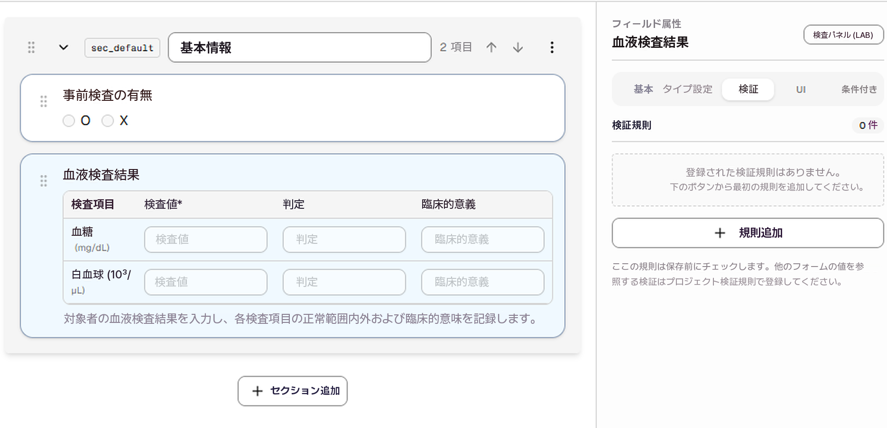
[+ 規則追加] — 最初の規則を作成します。選択した後の画面は 4.2 で説明します。
検証規則領域と、登録された規則数です。最初は 0 件 です。
規則がない場合は、「登録された検証規則はありません。下のボタンから最初の規則を追加してください。」という案内が表示されます。
下部の案内 — 「ここの規則は保存前にチェックします。他のフォームの値を参照する検証はプロジェクト検証規則で登録してください。」
注意事項
必須確認 データ破損 · フォーム完了不可
- • ⛔ 列単位のチェックはこのタブでは作成できません。「検査値は0より大きくなければならない」のような規則を設定する場所がありません — このタブの規則は表全体を1つの値として見るためです。列で制御できるのは入力方式と必須だけです。3.5
- • ⛔ 他のフォームの値を参照する検証はここでは作成できません。そのような規則は「プロジェクト検証規則」画面で登録してください — ただし、その画面でも検査パネルは参照対象として選べません。7.2
誤解しやすい動作
- • 検査値の適正範囲は自動判定で扱ってください。検証規則でブロックするのと異なり、自動判定は機関 · 性別 · 年齢に応じて異なる範囲を使え、範囲を外れた値も記録は残しつつ異常として表示します。3.7
- • キャプチャには最上位のフィールドが2つあります。「事前検査の有無」(単一選択) と「血液検査結果」 — 前のフィールドの回答によって表を受け付けるかどうかが分かれる関係なので、4.3 で2つのフィールドを結び付ける規則を作成します。
4.2規則の追加
概要
4.1 の[+ 規則追加] を選択すると、規則 1 ブロックが作成されます。最初は「値の範囲」が設定されていますが、表の値は行のまとまりなので大小の比較が成り立ちません。「他フィールドと比較」に変更してください — 表で使える唯一の種類です。4.3
画面説明
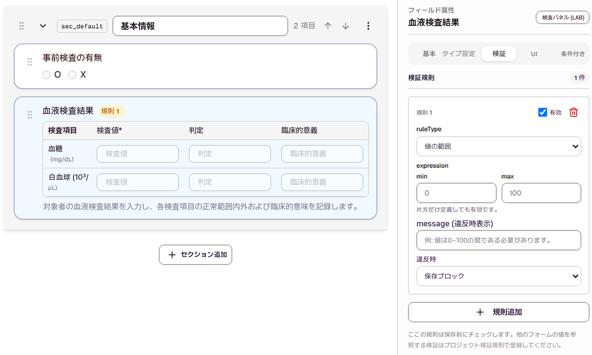
[+ 規則追加] — 規則をもう一つ作成します。(4.1 で選択したのと同じボタンです。)
キャンバスの表タイトルの横に「規則 1」バッジが表示されます。
規則数が 1 件 に変わります。
有効チェックボックスと削除アイコン — 規則を削除せずに一時的に停止できます。
ruleType — 規則の種類です。作成直後は「値の範囲」なので、必ず「他フィールドと比較」に変更してください。
min — 値の範囲を選んだときに表示される下限の欄です。
max — 同じ条件で表示される上限の欄です。
message (違反時表示) — 規則に違反したときに、ユーザーに表示する文言です。
違反時 — 保存ブロックまたは警告から選択します。(ruleType によっては選べなくなることもあります — 4.3)
薄い文字の 0 · 100 と「片方だけ定義しても有効です。」は値の範囲に関する案内であり、設定された値ではありません。
注意事項
必須確認 データ破損 · フォーム完了不可
- • ⛔ 検査値の正常範囲をここに記入しないでください。min · max は表全体を1つの値として見ますが、表は数値ではないため何も起こりません — エラーも出ないため、規則を設定したと思い込んだまま進んでしまいます。範囲は自動判定で扱ってください。3.7
- • ⛔ 「形式 (正規表現)」を表に設定すると、保存が最後までブロックされます。正規表現は行のまとまり全体を固定された内部文字列に変換してからチェックするため、どのような式を設定しても、値を1つでも入れた瞬間に違反になります。
- • ⛔ 「小数桁数」も動作しません。検査値の小数点を制限したくても、このタブからは列に届きません。4.1
- • message を空欄にすると、ユーザーはブロックされた理由が分かりません。必ず入力してください。
4.3規則作成完了 — 他フィールドと比較
概要
ruleType を他フィールドと比較に変えると、同じフォームの他のフィールドの値と照らし合わせてチェックします。「事前検査をしたと回答した場合にだけ結果を受け付ける」のような関係を表現でき、表で正しく動作する唯一の規則です。⚠ 画面の案内の項目数に注目してください — そこにこのタイプの性質が表れています。
画面説明
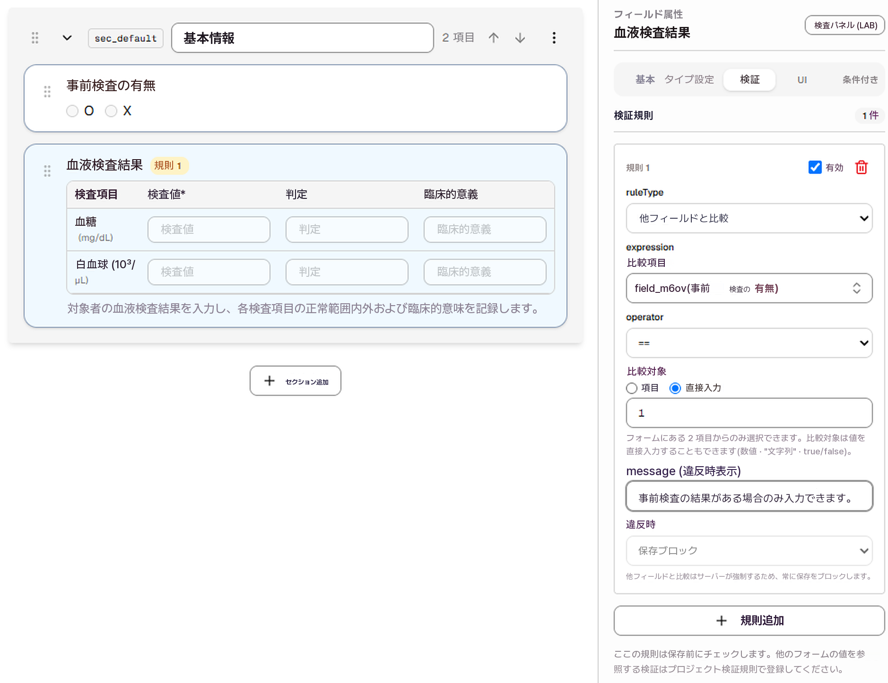
1 のときだけ保存されるように設定した状態ruleType = 他フィールドと比較 — 選択すると、下の欄が比較用に変わります。
比較項目 — キャプチャでは field_m6ov(事前検査の有無) です。⚠ 表自身を選んではいけません。
operator — 比較方法です。キャプチャでは ==(等しい) です。
比較対象 — 項目と直接入力から選択します。キャプチャでは直接入力で 1 を入れています — 「事前検査の有無」の保存値です。
message (違反時表示) — キャプチャでは 事前検査の結果がある場合のみ入力できます。 です。
違反時 — グレーで無効です。画面の案内のとおり「他フィールドと比較はサーバーが強制するため、常に保存をブロックします。」
画面の案内 — 「フォームにある 2 項目からのみ選択できます。」 ⚠ 最上位のフィールドが2つで、2 項目です — 表の列は候補に入りません。7.1
注意事項
必須確認 データ破損 · フォーム完了不可
- • ⛔ 比較項目に表自身を選ばないでください。表の値は行のまとまりなので
1と決して等しくならず、値を1つでも入れた瞬間に違反になって、保存が最後までブロックされます。 - • ⛔ 比較対象には画面の文言ではなく保存値を入れます。「事前検査の有無」は画面に
O·Xと表示されるため、保存値が本当に1なのか、そのフィールドの選択肢一覧で先に確認してください。 - • 同じ関係を条件付き表示6.2でも作成できます。両方を設定すると、質問もしないのに保存もブロックする重複になるため、どちらか一方だけを使用してください。6.1
誤解しやすい動作
- • 表の列は他のフィールドから参照できません。列は表の中にだけある項目なので、検証規則と条件付き表示の一覧に表示されません — フィールドグループのメンバーが一覧に表示されるのとは対照的です。7.1
UIタブ — 画面配置と案内文
- 5.1UIタブの全体構成
- 5.2レイアウト幅
- 5.3読み取り専用 · 非表示
- 5.4placeholder · helpText
5.1全体構成
概要
値そのものではなく、画面にどう配置し、どう案内するかを決めるタブです。このタブの設定は、保存されるデータそのものを変更しません。検査パネルではレイアウト幅が特に重要です — 列が4つ以上ある表なので、幅を狭めると真っ先に崩れます。5.2
画面説明
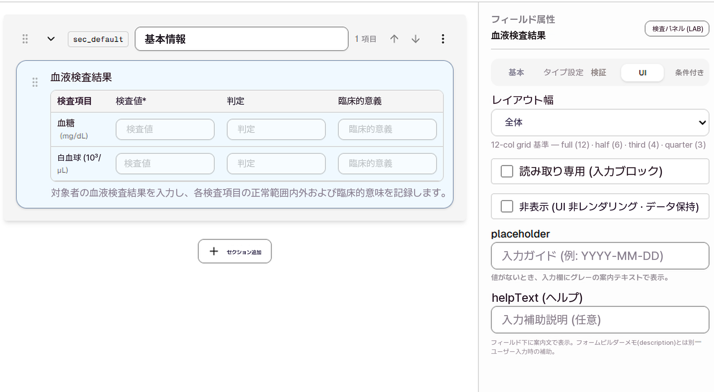
レイアウト幅 — フォームの1行の中でこの表が占める幅です。5.2
読み取り専用 (入力ブロック) — 表示はしますが、変更できないようにします。5.3
非表示 (UI 非レンダリング · データ保持) — 画面から隠します。表全体が消えます。5.3
placeholder — 検査パネルでは適用されません。セルの案内文には列名がそのまま使われるため、ここでは変更できません。5.4
helpText (ヘルプ) — 表の下に表示する案内文です。こちらは正常に動作します。5.4
タイプバッジ「検査パネル (LAB)」
注意事項
必須確認 データ破損 · フォーム完了不可
- • ⛔ placeholder に入力しても画面は変わりません。セルに表示される「検査値」 · 「判定」 · 「臨床的意義」は列名です — 変更するには、タイプ設定タブで列の label を修正してください。3.5 · 5.4
- • ⛔ 非表示は保存された値を消去しません。画面上で隠れるだけで、値はそのまま残り、抽出と監査証跡に含まれます。5.3
誤解しやすい動作
- • このタブの設定は保存された値を変えません。配置と案内だけが変わります。
参考
- • 読み取り専用と非表示を一緒に使用しないでください。非表示が優先して適用され、読み取り専用の設定は効果がありません。5.3
5.2レイアウト幅
概要
フォームの一行の中でこの表が占める幅を決めます。検査パネルは検査項目の列 + 入力列 3つで最低4つの欄があるため、これまで扱ったどのタイプよりも幅に敏感です。
画面説明
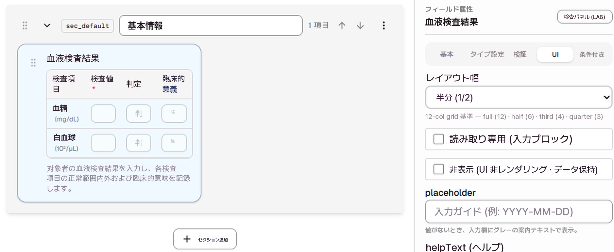
レイアウト幅 — 全体 · 半分 (1/2) · 1/3 · 1/4 から選択します。
表が半分の幅に狭まり、見出しがすべて2行に折り返され、セルの案内文が 判 · 臨 のように1文字に切れました。何の欄なのかまったく分かりません。
12-col grid 基準 — 画面の案内のとおり「full (12) · half (6) · third (4) · quarter (3)」です。表はこの幅をさらに列数で分けて使うため、体感の幅はずっと狭くなります。
注意事項
必須確認 データ破損 · フォーム完了不可
- • ⛔ 検査パネルは必ず全体の幅にしてください。半分ですでにセルの文言が1文字に切れます — 1/3 · 1/4 は表として使えない水準になります。
- • ⛔ 列を増やすほど早く崩れます。表示専用列まで加えて5つ以上になると全体の幅でも狭くなることがあるため、本当に必要な列だけを置いてください。3.5
誤解しやすい動作
- • 切れたのは案内文だけで、欄の機能はそのままです。入力も保存も正常に動作し、狭く見えるだけです — だからこそ、より気付きにくくなります。
参考
- • 指定しない場合は全体の幅が適用されます。
5.3読み取り専用 · 非表示
概要
表を表示しつつ変更できないようにしたり、画面から隠しつつ値は保持したりする設定です。どちらも保存された値を削除せず、表全体に適用されます — 特定の検査項目や列だけをロックしたり隠したりする設定はありません。
画面説明
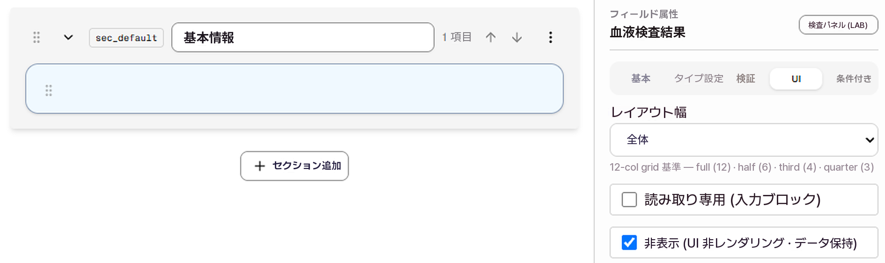
読み取り専用 (入力ブロック) — 選択すると表は表示されますが、記録者は修正できません。すべての行と列がロックされます。
非表示 (UI 非レンダリング · データ保持) — 選択すると、入力画面にこの表が表示されません。
キャンバスのカードに空の枠だけが残ります。タイトルも表もすべて表示されません。
レイアウト幅 — 5.2 で設定した値です。
注意事項
必須確認 データ破損 · フォーム完了不可
- • ⛔ 誤って入力された検査値を非表示で隠さないでください。値はそのまま残り、抽出と監査証跡に含まれます — 修正すべき値であれば、隠すのではなく値を修正する必要があります。4.3
- • ⛔ 自動判定が付いた表を非表示にすると、判定も見えなくなります。値と判定は残りますが記録者が確認できないため、条件付き表示で状況に応じて隠すほうが適切です。3.7 · 6章
誤解しやすい動作
- • 読み取り専用は、外部の検査結果を表示するときに便利です。検査室のシステムから受け取った値を確認だけさせる場合に適しています — 記録者が自分で転記するフォームには使用しないでください。
参考
- • 非表示と読み取り専用を一緒に選択すると、非表示が優先して適用されます。
5.4placeholder · helpText
概要
入力欄の中と下に入る案内文を決めます。検査パネルでは2つの項目の明暗が分かれます — helpText は正常に動作しますが、placeholder は適用されません。キャプチャがその証拠です。
画面説明
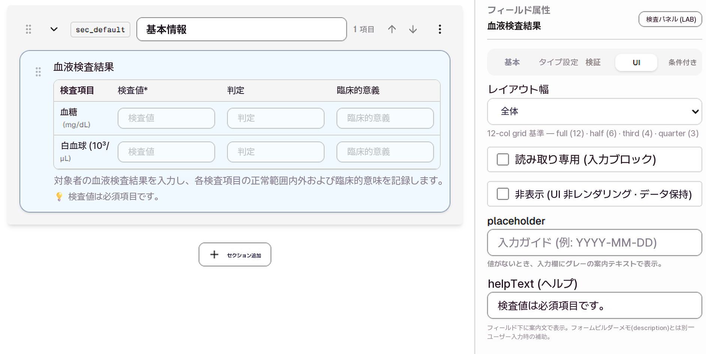
placeholder — 値がないときに入力欄に表示する薄い文字です。キャプチャでは空欄で、案内文「入力ガイド (例: YYYY-MM-DD)」だけが表示されています。
それでも表のセルには「検査値」 · 「判定」 · 「臨床的意義」がすでに表示されています。この文言は placeholder ではなく列名 (label) がそのまま使われたものであり、変更するにはタイプ設定タブで列の label を修正する必要があります。3.5
helpText (ヘルプ) — 表の下に表示する案内文です。キャプチャでは「検査値は必須項目です。」です。
表の下に 💡 アイコンと一緒に表示されます。こちらは正常に動作します。
description (ヘルプ) — 2.1 で入力した文言です。helpText とは別の項目で、アイコンなしで上の行に表示されます。
注意事項
必須確認 データ破損 · フォーム完了不可
- • ⛔ placeholder に記入した文言はどこにも表示されません。セルの案内は列名なので、この欄では変更できません — ここに記入しておくと、設定したつもりの案内が記録者に届きません。5.1
- • 単位の案内は検査項目の unit 欄に記入してください。単位は項目ごとに異なるため、表全体に付く helpText では伝えられません。3.2
誤解しやすい動作
- • 表全体に対する案内は helpText に記入してください。キャプチャのように「検査値は必須項目です。」と記入すると、すべての行に当てはまる案内として読まれます — 検証では強制できないため4.1 · 4.2、この文言が唯一の制御手段です。
- • description と helpText は一緒に表示されます。両方を入力すると 2 行になるため、同じ内容を二度書かないでください。2.1
条件付きタブ — 他の値に応じて表示する
- 6.1条件付き表示の有効化
- 6.2条件の設定
6.1条件付き表示の有効化
概要
他のフィールドの値に応じてこの表を表示したり隠したりする機能です。検査パネルに特によく合います — 検査は実施しない来院がよくあるためです。前に実施の有無を尋ね、その回答で表をまとめると、空の表と未記入を区別できます。2.2
画面説明
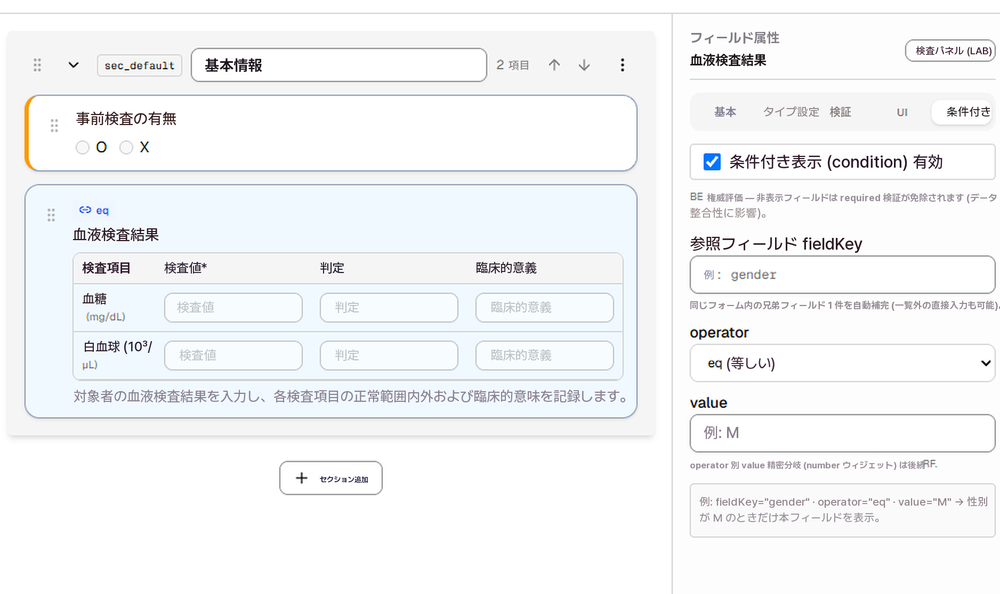
条件付き表示 (condition) 有効 — 選択すると、下の条件設定が表示されます。
キャンバスの表の上に 🔗 eq バッジが表示され、条件が適用されたことを示します。
参照フィールド fieldKey — 条件の基準となる、同じフォーム内の他のフィールドです。⚠ 画面の案内が「同じフォーム内の兄弟フィールド 1 件を自動補完」と示しているとおり、表の列は候補に入りません。4.3
operator — 比較方法です。デフォルト値はeq (等しい)です。
value — 比較する値です。参照フィールドの保存値を入力します。6.2
⚠ 画面の案内 — 「非表示フィールドは required 検証が免除されます (データ整合性に影響)。」 条件の判定はシステムが実行します。
下部の例 — fieldKey="gender" · operator="eq" · value="M" → 性別が M のときだけ本フィールドを表示。
注意事項
必須確認 データ破損 · フォーム完了不可
- • ⛔ 条件を設定すると必須検証が免除されます。条件が合わずに隠れている間は、表が必須であっても空のままでフォームが完了します。2.2
- • ⛔ すでに値を入力した後に条件が偽になると、表が画面から消えます。値はそのまま残るため、前の質問の回答を後から変えた場合は、残っている値を別途消去する必要があります。5.3
誤解しやすい動作
- • 検査を実施しなかった来院では表を尋ねないでください。前に はい/いいえ の質問を置いてこの表を条件でまとめると、該当しない来院では表が表示されず、空の表と未記入を区別できます。2.2
参考
- • 条件を有効にして参照フィールドを空欄にすると、条件は成立しません。必ず②~④をすべて入力してください。6.2
6.2条件の設定
概要
6.1 で有効にした条件を最後まで入力した状態です。この設定では、「事前検査の有無」の値が 1 のときだけ表が画面に表示されます。4.3 の検証規則と同じ参照フィールドを使いますが、保存をブロックする代わりに最初から尋ねない方法です。
画面説明
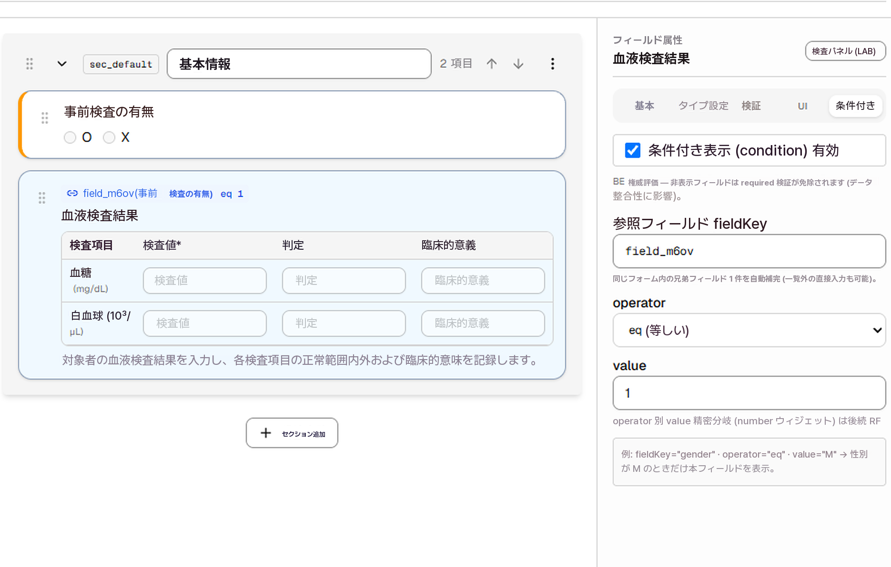
事前検査の有無 が 1 のときだけ表示されるように設定した状態参照フィールド fieldKey = field_m6ov — 同じフォームの「事前検査の有無」フィールドを指します。4.3 の検証規則と同じフィールドです。
①~③をすべて入力した結果 — キャンバスのバッジが 🔗 field_m6ov(事前検査の有無) eq 1 に具体化されます。
operator = eq (等しい)
value = 1 — 画面に表示される O ではなく、その選択肢の保存値を入力します。
⚠ 画面の案内 — 「非表示フィールドは required 検証が免除されます (データ整合性に影響)。」
下部の例 — fieldKey="gender" · operator="eq" · value="M" → 性別が M のときだけ本フィールドを表示。
注意事項
必須確認 データ破損 · フォーム完了不可
- • ⛔ value には画面の文言ではなく保存値を入力します。「事前検査の有無」が画面に
O·Xと表示されるからといってOと記入すると、条件が成立せず、表が最後まで表示されません。参照するフィールドの選択肢一覧で、先に保存値を確認してください。 - • ⛔ 参照フィールドの保存値を変更すると、条件が気づかないうちに壊れます。保存値を
1からYに変更すると、この条件はエラーもなくただ成立しなくなります — そのため、発行後の保存値の変更は危険です。
誤解しやすい動作
- • 自動判定は、表が隠れている間は実行されません。値がないので当然ですが、後で条件を真に変えると、そのとき入力する値から判定が付きます。3.7
- • 設定した後はプレビューで確認してください。基準の値を変えながら、表が実際に表示されたり消えたりするかを確認する必要があります。
付録
- 7.1タブ別の設定項目一覧
- 7.2必ず覚えておくこと · 扱っていないもの
7.1タブ別の設定項目一覧
タブ別の設定項目
| タブ | 項目 | 何を決めるか | 本文 |
|---|---|---|---|
| 基本 | fieldKey | 表全体が保存される一つのキー (保存後の変更禁止) | 2.1 |
| label (表示名) | 表の上に表示されるタイトル — 検査時点が分かるように | 2.1 | |
| description (ヘルプ) | 表の下の補助説明 — 採血日をどこに記入するかを案内 | 2.1 | |
| 必須入力 | 実際に入力した行が1件以上必要か — 手を付けていない行は除外 | 2.2 | |
| SDV検証対象 | CRA の原資料照合 — 自動判定と単位を確認する唯一の段階 | 2.3 | |
| タイプ設定 | 標準パネルの読み込み | ⚠ 項目·カラムをまるごと置き換える (作成開始時のみ) | 3.6 |
| itemCode | 検査項目の保存コード (snake_case · 重複禁止 · 発行前に確定) | 3.2 · 3.3 | |
| itemLabel · unit | 行見出しの表示名と単位 — ⚠ 単位はチェックされない | 3.2 · 3.4 | |
| (正常範囲) | ⚠ この画面にはない — 「LAB正常範囲」で機関 × 性別 × 年齢ごとに | 3.2 · 3.7 | |
| カラム fieldType · fieldKey · label | 列の入力方式 · 保存キー · 見出し (5種: TEXT·NUMBER·SELECT·DATE·BOOLEAN) | 3.5 | |
| カラム required · 表示専用 | 必須かどうか · 値を受け付けない固定文言の列 (2つは同時に指定不可) | 3.5 | |
| 自動判定 — 3つのスロット | 測定値列(NUMBER) · 判定出力列 · 検査日フィールド(フォームの日付フィールド) | 3.7 | |
| 自動判定 — マッピング · 保存 | NORMAL·LOW·HIGH をこのフォームの値に · ⚠ [指定を保存] は別 | 3.8 | |
| 検証 | ruleType | 「他フィールドと比較」のみ動作 — 範囲は自動判定で | 4.2 · 4.3 |
| 値の範囲 · 形式 · 小数桁数 | ⛔ 効果がないか、保存をブロックする — 使用禁止 | 4.2 | |
| 比較項目 | ⛔ 表自身を選ぶと保存がブロックされる · 列は候補にない | 4.3 | |
| UI | レイアウト幅 | ⚠ 必ず全体 — 半分でセルの文言が1文字に切れる | 5.2 |
| 読み取り専用 | 表示はするが修正できないように — 外部結果の表示に適する | 5.3 | |
| 非表示 | 画面に表示しない — 保存された値はそのまま残る | 5.3 | |
| placeholder · helpText | ⛔ placeholder は適用されない · helpText のみ動作 | 5.4 | |
| 条件付き | 条件の有効化 | 検査を実施しない来院では最初から尋ねない (必須検証の免除) | 6.1 |
| 参照フィールド fieldKey | 条件の基準となる同じフォームのフィールド (列は候補にない) | 6.2 | |
| operator · value | 比較方法と比較する値 (保存値を入力) | 6.2 |
コンテナ3種の比較 — 何が固定で何が開かれているか
| 項目 | テーブル型 (GRID) | フィールドグループ (GROUP) | 検査パネル (LAB) |
|---|---|---|---|
| 初期状態 | 空の案内 | 空の案内 | 使える構成が入っている 1.1 |
| 行を誰が決めるか | 記録者([行追加]) | —(項目固定) | 作成者(検査項目) — 記録者は増やせない |
| 下位項目の参照 | カラム不可 | メンバー可能 | 列不可 (4.3 の案内の「2 項目」) |
| 空の行の扱い | 空の行も未完了 | — | 手を付けていない行は除外 — 一部だけ実施しても完了 2.2 |
| 固有の機能 | — | 行あたりの項目数 | 標準パネル · 自動判定 · 表示専用列 (3.5~3.8) |
7.2必ず覚えておくこと · 扱っていないもの
必ず覚えておくこと
必須確認 データ破損 · フォーム完了不可
- • 自動判定を使うには、フォームに日付フィールドが必要です。正常範囲が年齢層別なので、検査日がないと判定が1つも付きません。3.7
- • 判定出力列に「臨床的意義」のような自由記述欄を選ばないでください。システムは阻止しませんが、記録者が書いた所見が上書きされます — 「判定」列を選んでください。3.8
- • [指定を保存] を押さないと自動判定は適用されません。フォームの保存とは別の軸です。3.8
- • 標準パネル読み込みは、検査項目だけでなく入力カラムまでまるごと置き換えます。作成を始めるときだけ使ってください。3.6
- • 記録者は行を追加できません。受け付ける検査項目を漏れなく入れる必要があります。1.1 · 3.4
- • 単位はチェックされません。unit 欄を必ず記入し、単位が合っているかは SDV の段階で確認してください。2.3 · 3.2
- • レイアウト幅は全体にしてください。半分ですでにセルの文言が1文字に切れます。5.2
- • placeholder に記入した文言はどこにも表示されません。セルの案内は列名なので、列の label を修正してください。3.5 · 5.4
誤解しやすい動作
- • 正常範囲はこの画面にはありません。機関 · 性別 · 年齢の単位で「LAB正常範囲」画面で作成します。3.2 · 3.7
- • 手を付けていない行は未完了とみなしません。一部の検査だけを実施した状況をそのまま記録できます。2.2
- • 検査値の範囲は、検証規則ではなく自動判定で扱ってください。機関·性別·年齢別の範囲を使え、外れた値も記録は残ります。4.1
参考
- • 追加直後のカードの薄い文字は入力例です。最初の項目の値と同じに見えますが、保存されません。3.3
この文書で扱っていないもの
※ 「LAB正常範囲」画面 (SCR-CRF-015) — 正常範囲を機関 × 性別 × 年齢の単位で作成し、再判定を実行する別の画面です。左メニューから開き、このマニュアルの範囲外です。3.2 · 3.7 · 3.8
未測定宣言を許可 · AE意味ロール — 基本タブに項目そのものが表示されません。値が複数行のため、その2つの機能が成り立たないからです。検査の未実施は条件付き表示で処理してください。1.1 · 6.1
デフォルト値 (defaultValue) · 自動計算 (calculation) — タイプ設定タブに項目がありません。検査値で計算が必要な場合は、別の数値フィールドを置いてください。3.1
表示専用列の固定文言の入力 — 列を表示専用に指定すると、検査項目ごとに表示する文言を別途記入することになります。キャプチャにその画面がないため、このマニュアルでは指定のチェックボックスまでを扱います。3.5
選択式の判定列の選択肢編集 — 判定列を選択(SELECT)にすると、選択肢一覧のエディターが表示されます。キャプチャの判定列がテキスト(TEXT) に変更されているためその画面がなく、このマニュアルでは要件だけを文章で説明しました。3.5 · 3.8
列を参照する検証 · 条件 — 列の fieldKey は表の中でのみ有効なため、他のフィールドの検証規則や条件付き表示から直接参照できません。4.3 · 6.1
プロジェクト検証規則からの参照 — 他のフォームの値を見る「プロジェクト検証規則」画面では、検査パネルを参照対象として選べません。値が行のまとまりだからです。4.1